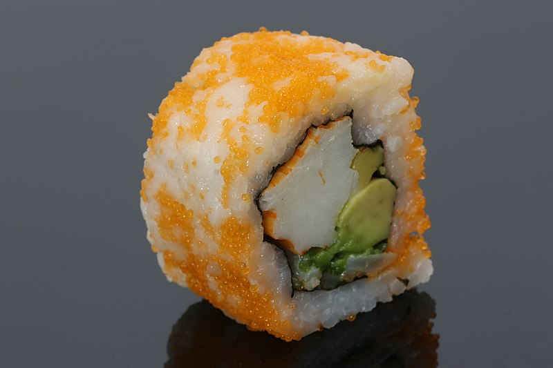

Sushi is a Japanese dish that has specially prepared rice and typically includes some sort of fish or seafood, raw or cooked. While many would think of raw fish as soon as the word sushi is mentioned, rice is actually the most critical ingredient. The word “sushi” itself references the sour flavour of the vinegared rice. No matter how it variates, sushi will always have rice in it. It is so vital to the quality of sushi, that chefs must endure years of training to learn how to do it perfectly each time before they move on to the fish and seafood portions of sushi. The specific rice is medium-grained rice that is usually made with vinegar, salt and sugar. The usual type of rice used is called Japonica, which is very different from the typical skinnier long-grained rice that is typically seen in the West called Indica rice. The rice is starchy, with higher levels of a specific starch called amylopectin than in Indica rice, which makes it considerably sticky when cooked. This helps it become easier to eat with chopsticks and for shaping and molding sushi.

A California Roll
History
Sushi traces back to its origins back to China, which may be surprising to many. While Japan popularized it, sushi originates from the Chinese dish known as narezushi. It was made of fermented rice and salted fish. However, it is not fermented and salted to taste. The dish’s earliest known existence was in the 2nd century BC, meaning it predates refrigerators by almost 2,000 years. It was extremely practical at its time, as the fermentation of rice allowed for its preservation and the fish being slated prevented the growth of harmful bacteria. This kept narezushi fresh for longer, without the use of a refrigerator. Interestingly enough, the fermented rice was usually thrown away when eating the fish, and only used in order to wrap the fish. This dish spread from China to Japan in the 8th century, and was first referred to as “sushi” in the Yoro Code, a code of governing rules in Japan, in the year 718. The dish slowly changed over the centuries, when the Japanese began eating three meals per day, boiling their rice, and using rice vinegar to speed up the process of fermenting rice. During the 18th century, sushi had spread to Edo, where there were three popular sushi restaurants - Matsunozushi, Kenukizushi, and Yoheizushi that opened, with thousands more restaurants opening as well. At this point in time though, sushi was being cooked and served in large pieces. Sushi, as we know it today, was invented by a chef named Hanaya Yohei, who found that instead of throwing out the rice, it could be seasoned with vinegar and a small piece of fish could be placed on top, which created the flavourful and portable bite-sized treat that we recognize today known as nigiri. Shortly after, this dish spread globally.